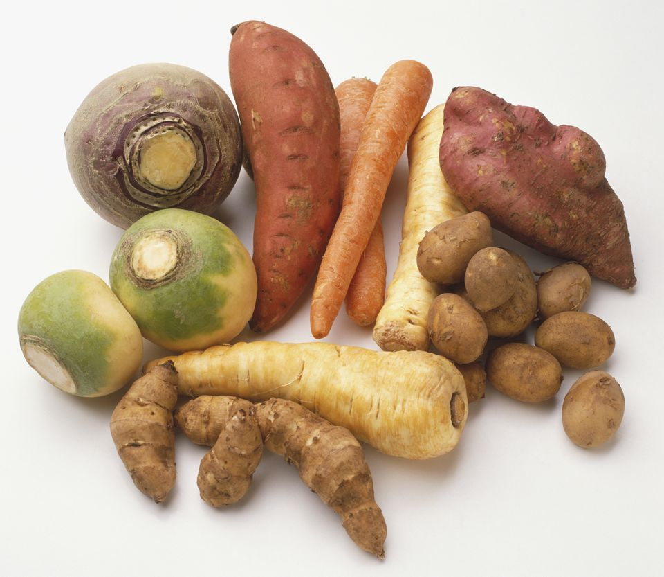
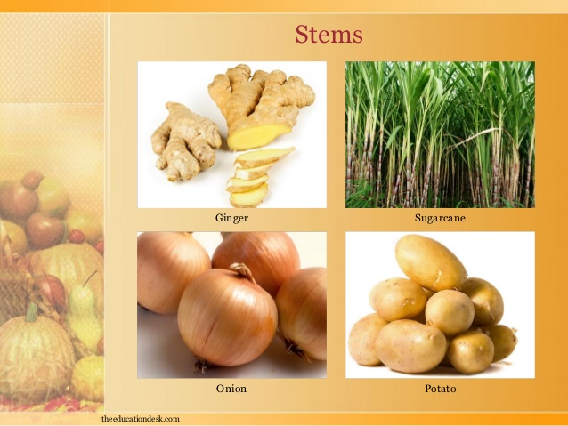

Plant Parts As Food
ROOT:Beetroot,sweet potato,radish &carrot are roots, which we use as our food items.

STEMS:Stems of some plants are eaten as food items. Asparagus,stalks,celery,potato,etc.,are known as stems.
